نظام معلومات الأشعة · أرشيف الصور · كتابة التقارير
من التسجيل إلى الموعد والجهاز حتى التقرير المعتمد: مكان عمل واحد في المتصفح، بالعربية والإنجليزية والألمانية. الخادم والبيانات عندك، لا في السحابة. وعند الرغبة مع دعم بالذكاء الاصطناعي يعمل هو أيضاً داخل منشأتك.
يتبع الاعتماد البلد والجهة التنظيمية المختصة فيه. قبل الاستخدام السريري يحصل النظام على الاعتماد الذي يتطلبه ذلك البلد وأنظمته.
01
كل وحدة تُفعَّل بمفردها. تبدأ بما تحتاجه.
بيانات أساسية مع سجل كامل للتصحيحات، وبحث بالاسم والرقم. تُدمج الملفات المكررة بموافقة شخصين ويمكن فصلها من جديد.
إنشاء الفحوص ومتابعتها: مطلوب، مجدول، وصل، قيد التنفيذ، مكتمل. كل دور يرى فقط الخطوات المسموح له بها.
غرف وأجهزة مع منع الحجز المزدوج، تسجيل الحضور يوم الفحص، الإلغاء وعدم الحضور.
تظهر الفحوص المجدولة على الجهاز عبر DICOM Modality Worklist. يختار الفني المريض بدل الكتابة، فتزول أخطاء الإدخال.
استقبال عبر DICOM وربط تلقائي للدراسات الواضحة بطلبها. كل ما فيه شك يذهب إلى قائمة مراجعة ويربطه أو يرفضه شخص.
عارض ويب خاص من داخل الفحص مباشرة: ثلاثة مستويات (MPR) وعرض ثلاثي الأبعاد، نوافذ العرض بمفتاح واحد (F2 الرئة، F3 العظم، F4 الأنسجة الرخوة، F8 الدماغ، F9 البطن)، قياس المسافة والزاوية وزاوية كوب والمساحة والكثافة، ومقارنة مع الفحص السابق. يتذكّر العارض ترتيب الشاشة لكل طبيب ولكل نوع فحص (Hanging Protocol). ويتبع الاستخدام التشخيصي تأهيل النظام في البلد المعني.
مسودة مع قوالب، إرسال، اعتماد من قارئ ثانٍ (يمكن إيقافه)، إعادة مع ذكر السبب، ملاحق. التقرير المعتمد لا يتغيّر.
كل تقرير معتمد يحصل على ختم تشفيري للنظام ويُصدَّر بصيغة PDF/A-2b للحفظ الطويل.
برنامج خاص بمكتب الطبيب: قائمة العمل والصور جنباً إلى جنب أو الصور على الشاشة الثانية، مقارنة مع الفحص السابق بخطوة واحدة، وصورة اختبار للشاشة.
رفع الإحالات والموافقات والتقارير السابقة كملف PDF أو صورة. يُفحص كل ملف من البرمجيات الخبيثة قبل حفظه.
نظرة على حالة النظام والعمل المنتظر والوظائف المفعّلة. المستخدمون والأدوار وعامل التحقق الثاني في واجهة إدارة خاصة.
يتعرّف نموذج على الأعضاء والعظام والفقرات في صور الطبقي المحوري، ويكتب أسماء الفقرات (C/T/L/S) على الصورة في كل المستويات، وينتقل إلى العضو بنقرة واحدة. يجري الحساب على بطاقة الرسوميات في حاسوب الطبيب إن كانت قوية بما يكفي فيخفّ الحمل عن الخادم، وإلا فعلى الخادم. وعند وجود أكثر من بطاقة يختار العارض الأقوى، ويمكن للطبيب تغييرها.
ينظر نموذج للصور واللغة إلى الفحوص الجديدة فور وصولها. عند فتح الفحص يظهر الاقتراح بجانب الصور، فيؤكّده الطبيب أو يرفضه. إنه اقتراح، لا تقرير.
إملاء بالصوت، وبنقرة واحدة يُرتَّب النص تحت السؤال السريري والتقنية والموجودات والخلاصة دون إضافة أي شيء. إضافة إلى الترجمة بين العربية والإنجليزية والألمانية وتدقيق الإملاء. لا يُعتمد شيء بدون إنسان.
يبلّغ طبيب الأشعة عن نتيجة حرجة، فيرى الأطباء المحيلون فوراً تنبيهاً أحمر حتى يؤكّد أحدهم الاطلاع عليه. وعند الرغبة أيضاً بريد إلكتروني أو رسالة SMS أو واتساب، دون اسم المريض.
الصور التي يشير إليها نص التقرير تظهر في ملف PDF للتقرير تحت النص مباشرة.
رابط أو رمز QR دون حساب: استبيان قبل الفحص (منظّم قلب، معادن، حساسية، حمل، الكلى، ميتفورمين، رهاب الأماكن الضيقة) مع تنبيه للفريق، والصور في عرض خاص بالمريض، والتقرير المعتمد مشروحاً بكلمات بسيطة (بالعربية والإنجليزية والألمانية)، ورابط ضيف لرأي طبي ثانٍ صالح 7 أيام على الأكثر.
للاستقبال وفنيي الأشعة: المتوقَّعون، ومن في غرفة الانتظار مع مدة الانتظار، ومن في الجهاز مع المدة المنقضية والمتبقية، ومن انتهى. وكل جهاز مع حالته (متاح أو مشغول) وموعده التالي.
مقارنة مع الفحص السابق كخريطة فرق (الزيادة بالأحمر والنقص بالأخضر) أو كمزج؛ وتُطابَق السلسلة السابقة تلقائياً في الفراغ – المستوى والموضع والتليين المرن في الاتجاهات الثلاثة. وللآفات المؤكَّدة يحسب العارض مجموع أطول الأقطار والتغيّر وفق RECIST 1.1. وسائل مساعدة محسوبة، والتقييم يبقى للطبيب.
ملاحظات التقرير بجانب الصور مباشرة، مع الإملاء والقياسات كمراجع؛ وأوامر صوتية بالعربية والإنجليزية والألمانية. تُحفظ القياسات في الأرشيف كحالة عرض DICOM (GSPS) لتظهر في برامج العرض الأخرى، وتُقارَن بقائمة القيم المرجعية للمنشأة. ويُحفظ مقطع شرح بالصوت بصيغة MP4.
تُعرض سلسلة ثانية مطابقةً فوق الأولى، مثل PET فوق CT. يحسب معالج الرسوم في جهاز العمل السطوع والتباين، ويقرأ الأرشيف أيضاً الصور المضغوطة بصيغة HTJ2K.
تحتفظ المنشأة بقوالبها في ملف واحد. القوالب بصيغة MRRT، كما يقدّمها RadReport، تُستورد بأمر واحد، ويبقى المصدر وإشعار الترخيص مع النص.
يُجهَّز الخادم من حزمة RPM. وللمواقع التي لا إنترنت فيها يجمع أمر واحد كل ما يلزم على وسيط تخزين، ثم يجري التثبيت دون أي اتصال بالشبكة.
عند الرغبة يعمل النظام ونماذج الذكاء الاصطناعي معاً على خادم واحد، دون حاسوب ثانٍ للذكاء الاصطناعي. تُحمَّل النماذج مسبقاً أو تُثبَّت من ذاكرة USB، دون إنترنت.
يترجم النصوص بين العربية والإنجليزية والألمانية، ويدقّق الإملاء، ويقترح ترتيباً للعمل المنتظر، مرتبطاً بخادم ذكاء اصطناعي داخل منشأتك مثل KM Code Craft AI. يقدّم اقتراحات فقط.
02
لقطات من الواجهة الحقيقية. الأشخاص والبيانات مختلقة؛ أما الصور في العارض فمن مجموعات بحثية عامة مجهولة الهوية (The Cancer Imaging Archive: RIDER Lung CT و Lung-PET-CT-Dx و Pancreas-CT؛ ترخيص CC BY).
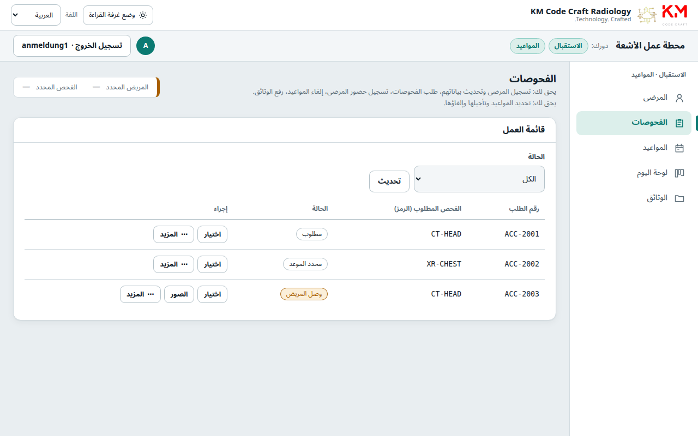
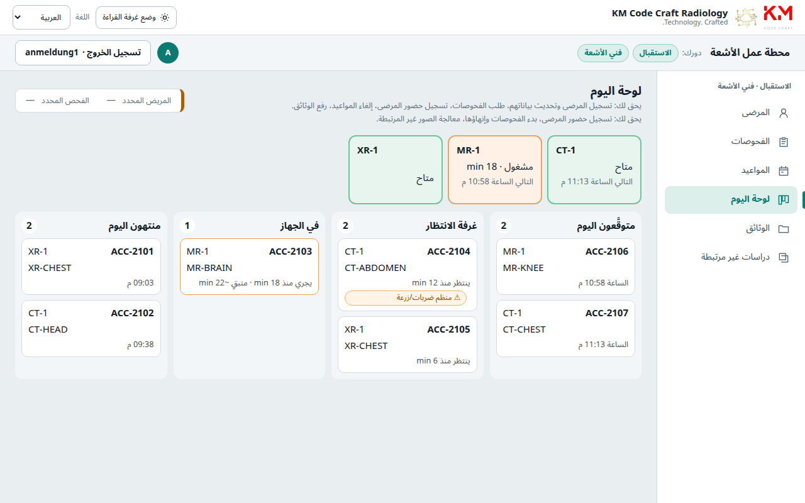
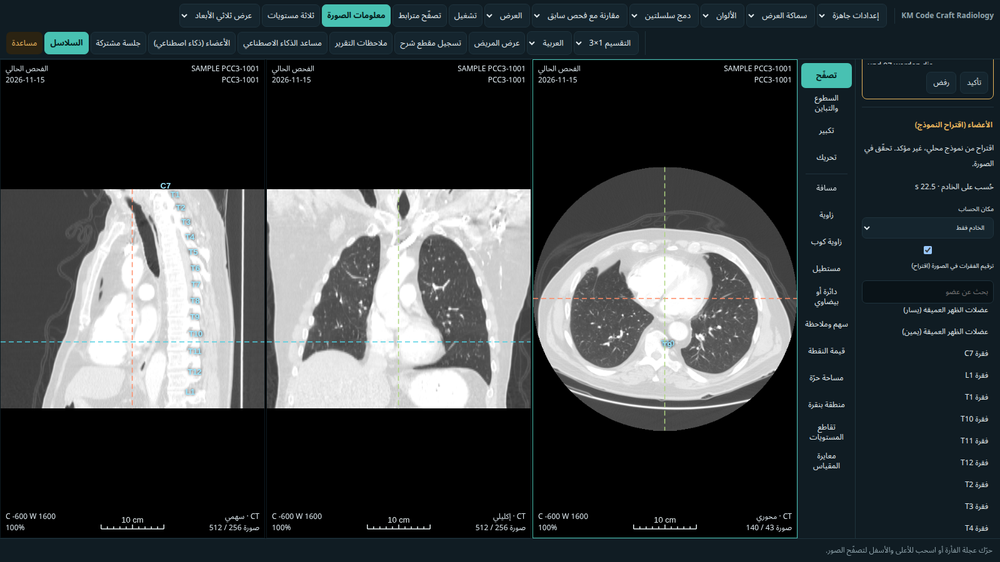
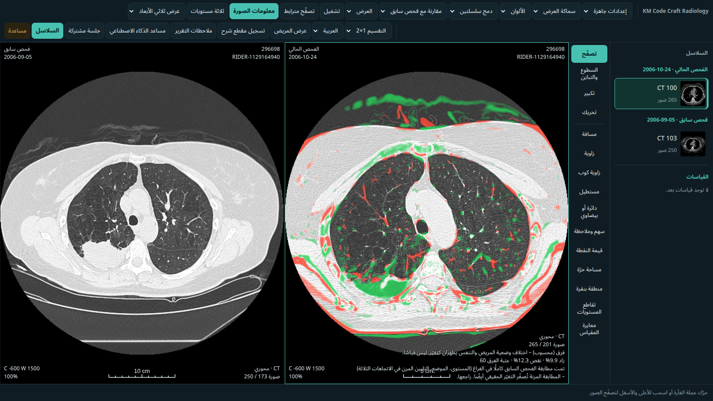
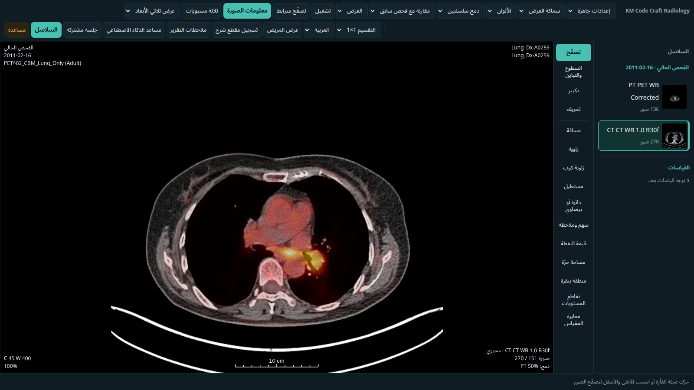
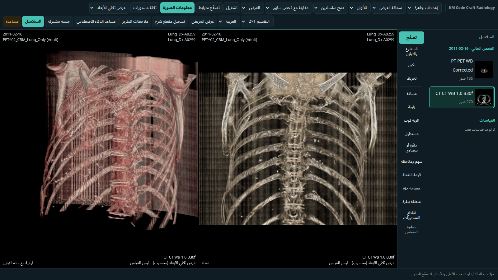
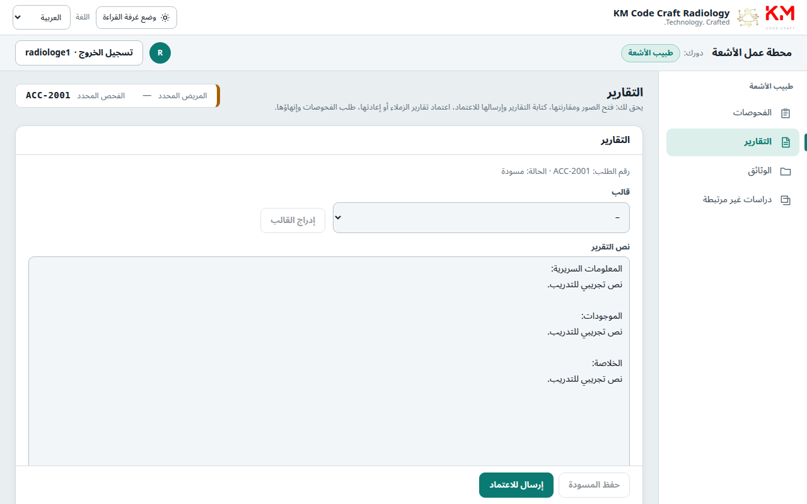
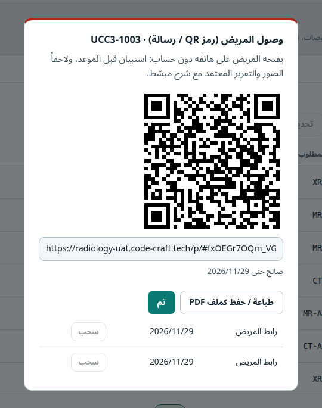
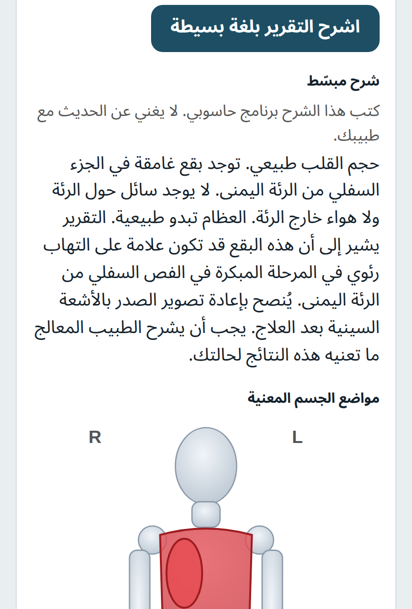
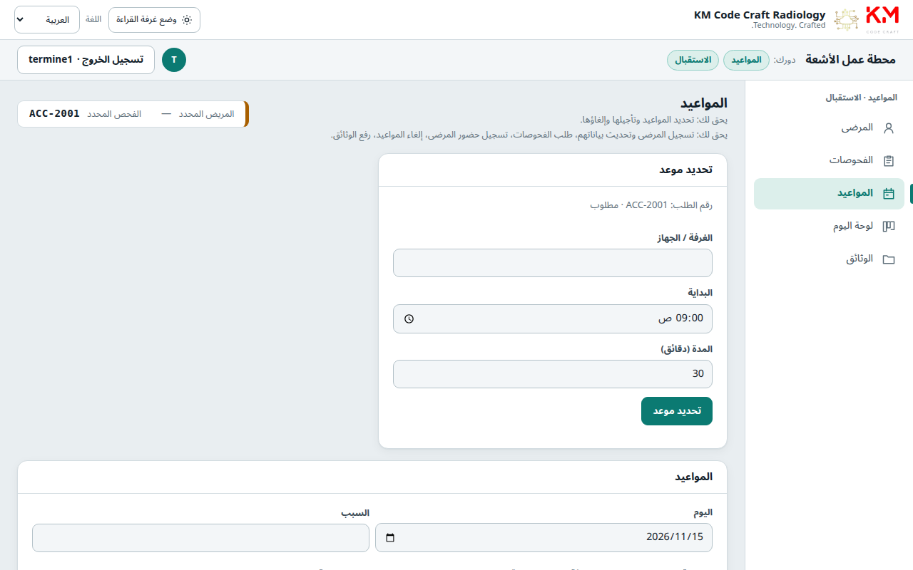
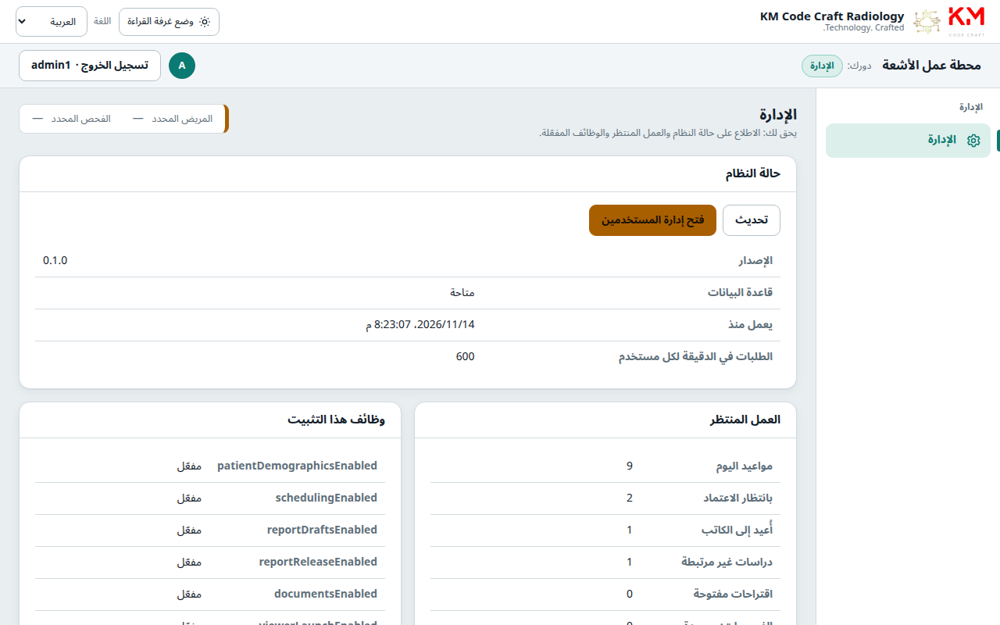
03
أحد عشر دوراً تفصل من يرى ماذا ومن يفعل ماذا. الخادم هو من يفرض الفصل، لا الشاشة فقط.
04
بيانات المرضى لا تغادر منشأتك. ومن فعل ماذا يمكن إثباته.
05
مكوّنات مفتوحة مجرَّبة، مترابطة بعناية. لا رسوم ترخيص لأطراف أخرى على المكوّنات الأساسية.
| المجال | التنفيذ |
|---|---|
| مكان العمل | تطبيق ويب للإصدارات الحديثة من Chrome و Edge؛ لا تثبيت على جهاز المستخدم |
| الخادم | Linux مع Docker؛ كل الخدمات حاويات مُحصَّنة بلا صلاحيات الجذر |
| قاعدة البيانات | PostgreSQL 17 مع فصل الوصول على مستوى الصف ونسخ احتياطي مستمر |
| أرشيف الصور | Orthanc (DICOM C-STORE، DICOMweb، Modality Worklist) |
| العارض | عارض ويب خاص (WebAssembly، WebGPU) عبر روابط دخول قصيرة الصلاحية، ومتوفر أيضاً داخل برنامج ويندوز |
| الذكاء الاصطناعي (وحدة إضافية) | نماذج داخل المنشأة دون إنترنت: البحث عن الأعضاء (TotalSegmentator، Apache-2.0)، نموذج للصور والنصوص (MedGemma)، الإملاء (whisper)، مساعد النصوص. على خادم ذكاء اصطناعي مستقل أو على خادم النظام نفسه |
| تسجيل الدخول | Keycloak (OpenID Connect، TOTP)، واختيارياً LDAP / Active Directory |
| الواجهات | DICOM، DICOMweb، واجهة REST مع وصف OpenAPI 3.1، مقاييس Prometheus |
| غير مشمول | واجهات HL7/FHIR، الفوترة، الأشعة عن بُعد، التوقيع الشخصي المؤهَّل |
| خادم استرشادي | لقسم صغير: 8 أنوية، 32 غيغابايت ذاكرة، قرص SSD لقاعدة البيانات، تخزين صور مرآوي بحسب حجم الدراسات، مزوّد طاقة احتياطي، وسيط نسخ احتياطي منفصل. ومع النموذج اللغوي على الخادم نفسه: 16 نواة و64 غيغابايت ذاكرة. التحديد الدقيق يتبع مسح الموقع. |
06
كل الفحوص تعمل آلياً ومدوَّنة في سجل المشروع. الأرقام من جهاز التطوير وليست وعداً لعتادك.
| الفحص | النتيجة |
|---|---|
| فحص القبول على موقع الاختبار | يوم عمل كامل بحسابات اختبار عبر الإنترنت: من التسجيل حتى الاعتماد، وتنبيه حرج مع تأكيد الاطلاع، واستبيان على الهاتف مع تنبيه للفريق، وشرح التقرير، والبحث عن الأعضاء في العارض (17/11/2026) |
| اختبارات آلية | أكثر من 400 اختبار آلي و60 اختباراً على قاعدة بيانات حقيقية مع كل تغيير |
| المسار الكامل في المتصفح | دخول ← موعد ← فحص ← تقرير ← اعتماد القارئ الثاني، مع عامل تحقق ثانٍ، على خادم حقيقي |
| ربط الأجهزة | الاستقبال وقائمة العمل على أرشيف DICOM حقيقي مع جهاز محاكى، وبأسماء عربية أيضاً |
| حمل متواصل 30 دقيقة | 276,205 طلباً بلا خطأ، زمن استجابة ثابت 11 ميلي ثانية (95%)، ذاكرة مستقرة |
| الاستعادة | قاعدة بيانات 11 غيغابايت أُعيدت إلى لحظة محددة خلال 75 ثانية بعد فقدان كامل محاكى |
| تقرير PDF | PDF/A-2b بخطوط مضمَّنة، بالعربية والألمانية |
07
نسلّم النظام كمنظومة جاهزة: عتاد، تثبيت، تدريب ومتابعة.
08
09
للقراءة والمشاركة والتحقق.
تسعة كتيّبات مصوّرة، خطوة بخطوة
10
لا. تعمل النماذج داخل منشأتك، على خادم ذكاء اصطناعي مستقل أو مع النظام على خادم واحد. والبحث عن الأعضاء يجري، حيث أمكن، على بطاقة الرسوميات في حاسوب الطبيب نفسه.
لا. يقدّم اقتراحات موسومة بأنها اقتراحات، ويراجعها الطبيب فيؤكّدها أو يرفضها. لا يُعتمد إلا ما يعتمده إنسان.
لا. النظام يعمل كاملاً داخل شبكتك. الإنترنت مطلوب فقط للدعم عن بُعد إذا رغبت به.
يتبع ذلك تأهيل النظام واعتماده في البلد المعني. وحيث تُشترط محطة تشخيص معتمدة يزوّدها الأرشيف بالصور عبر DICOM.
الأجهزة التي ترسل DICOM. ولقائمة العمل على الجهاز يجب أن يدعم الجهاز Modality Worklist وأن يكون مرخّصاً لها. نوضّح ذلك في مسح الموقع.
لا. الحاجة إلى اعتماد ونوعه يتبعان بلدك والغرض من الاستخدام. نوضّح ذلك معاً قبل أي تثبيت.
السعر يتبع العتاد وعدد الأجهزة ومستوى المتابعة. تحصل على عرض ثابت بعد مسح الموقع.
لك. تبقى على خادمك بصيغ مفتوحة (DICOM، PostgreSQL، PDF/A).
نعرض لك النظام ببيانات تجريبية ونناقش ما يحتاجه قسمك.
Radiology information system · Image archive · Reporting
From registration to the appointment, the modality and the released report: one workplace in the browser, in Arabic, English and German. The server and the data stay with you, not in a cloud. Optionally with AI support that also runs on your premises.
Approval follows the country and its regulator. Before clinical use, the system obtains the approval that the country and its regulations require.
01
Every module can be switched on separately. You start with what you need.
Demographics with a complete correction history, search by name and number. Duplicate records are merged under a two-person rule and can be separated again.
Create and follow examinations: requested, scheduled, arrived, in progress, completed. Each role sees only the steps it may perform.
Rooms and devices with protection against double booking, check-in on the day, cancellation and no-show.
Scheduled examinations appear on the device through DICOM modality worklist. Staff pick the patient instead of typing; mix-ups from typing errors disappear.
DICOM receive with automatic matching of unambiguous studies to their order. Anything doubtful goes to a review list and is assigned or rejected by a person.
Own web viewer straight from the examination: three planes (MPR) and 3D, windows by key (F2 lung, F3 bone, F4 soft tissue, F8 brain, F9 abdomen), measuring distance, angle, Cobb angle, area and density, comparison with the earlier examination. Each physician's layout per examination type is remembered (hanging protocol). Diagnostic use follows the qualification in the country concerned.
Draft with templates, submit, release by a second reader (can be switched off), return with a reason, addenda. A released report cannot be changed.
Every released report receives a cryptographic system seal and can be exported as PDF/A-2b for long-term filing.
A dedicated program for the reading desk: worklist and images side by side or the images on the second screen, comparison with the earlier examination in one step, a test pattern for the screen.
Upload referrals, consent forms and previous reports as PDF or image. Every file is scanned for malware before it is stored.
Overview of system state, waiting work and enabled functions. Users, roles and second factor in a dedicated administration console.
A model finds the organs, bones and vertebrae of a CT, labels the vertebrae (C/T/L/S) in every plane and jumps to an organ with one click. It runs on the graphics card of the physician's computer when that card is strong enough – which relieves the server – and otherwise on the server. With several graphics cards the viewer picks the strongest; the physician can change it.
An image and language model looks at new examinations as soon as they arrive. When the study is opened, the suggestion sits next to the images; the physician confirms or rejects it. A suggestion, not a report.
Voice dictation; one click sorts the text into clinical question, technique, findings and impression without adding anything. Plus translation between Arabic, English and German and a spelling check. Nothing is taken over without a person.
The radiologist flags a critical finding; the referring physicians immediately see a red alarm until someone acknowledges it. Optionally also e-mail, SMS or WhatsApp, without the patient's name.
Images the report text refers to appear in the report PDF right below the text.
Link or QR code without an account: questionnaire before the examination (pacemaker, metal, allergy, pregnancy, kidneys, metformin, claustrophobia) with a warning to the team, images in a patient view, the released report explained in plain words (Arabic, English, German) and a guest link for a second opinion, valid for at most 7 days.
For reception and technologists: expected, in the waiting room with waiting time, in the device with running and remaining time, finished. Plus every device as free or busy with its next appointment.
Comparison with the earlier examination as a difference map (risen red, fallen green) or a blend; the earlier series is fitted in space by itself – level, position and elastic bend in three directions. For confirmed lesions the viewer works out the sum of the longest diameters and the change by RECIST 1.1. Computed aids; the assessment stays with the physician.
Report notes right beside the images, with dictation and measurements as references; voice commands in Arabic, English and German. Measurements can be stored in the archive as a DICOM presentation state (GSPS) so that other viewers show them, and held against the facility's list of reference values. An explanatory clip with voice is saved as MP4.
A second series lies exactly over the first, for example PET over CT. Brightness and contrast are worked out by the graphics chip of the workstation; the archive also reads HTJ2K-compressed images.
The facility keeps its templates in one file. Templates in the MRRT format, as RadReport offers them, are imported with one command; source and licence note stay with the text.
The server is set up from an RPM package. For sites without internet, one command collects everything needed on a medium; the installation then runs with no network access at all.
On request the system and the AI models run together on a single server, without a second AI machine. The models are loaded in advance or installed from a USB stick – without internet.
Translates texts between Arabic, English and German, checks spelling and suggests an order for the waiting work – connected to an AI server in your own building, such as KM Code Craft AI. It only suggests.
02
Screenshots of the real interface. Persons and details are invented; the images in the viewer come from public, anonymised research collections (The Cancer Imaging Archive: RIDER Lung CT, Lung-PET-CT-Dx, Pancreas-CT; CC BY).
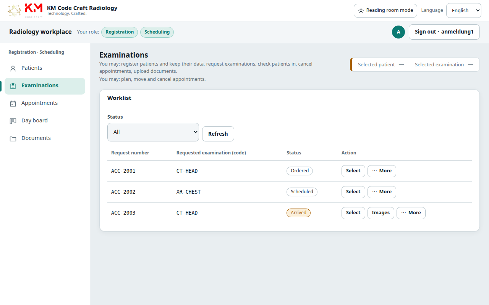
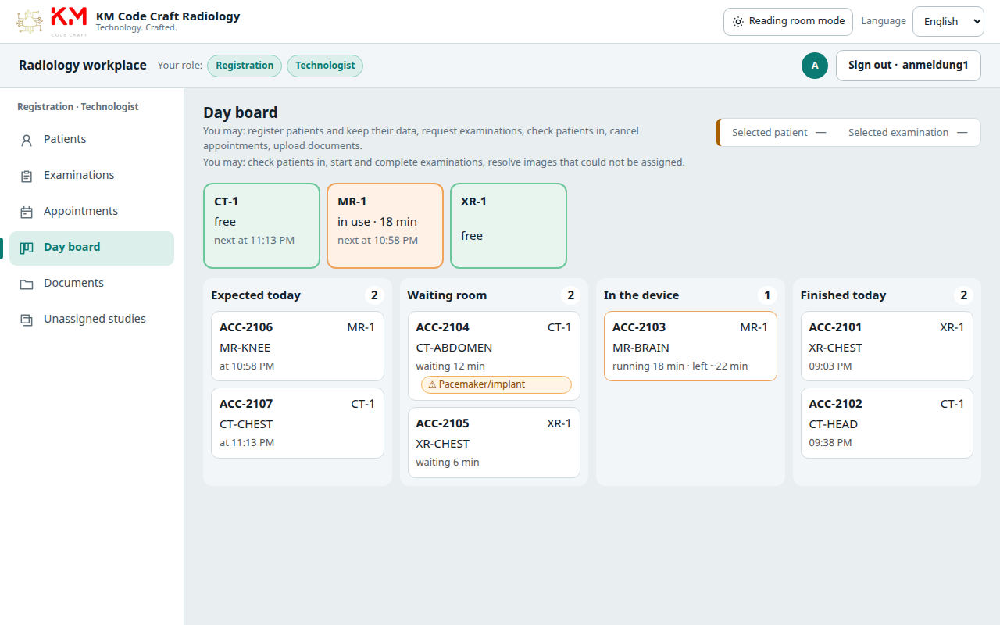
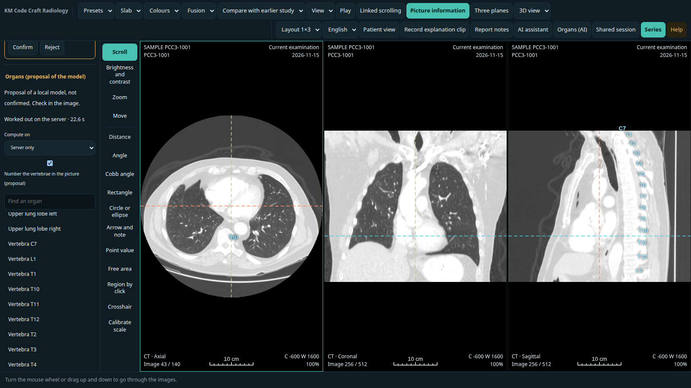
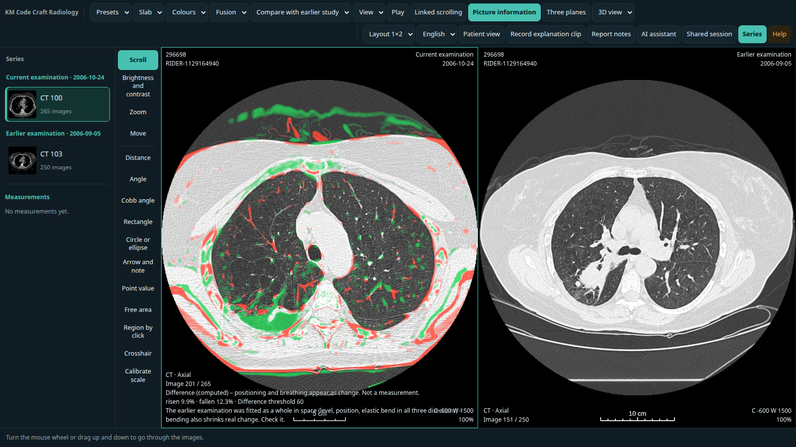
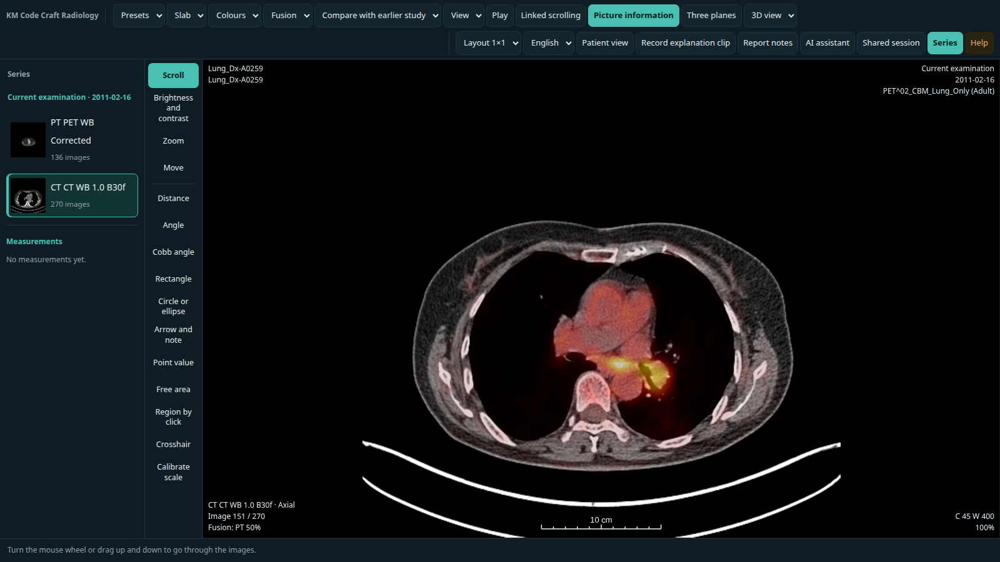
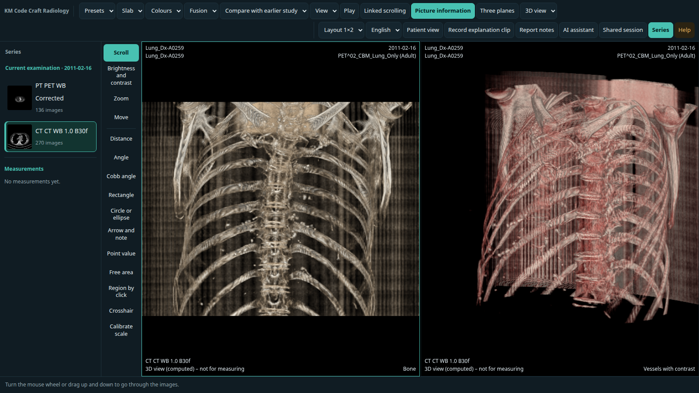
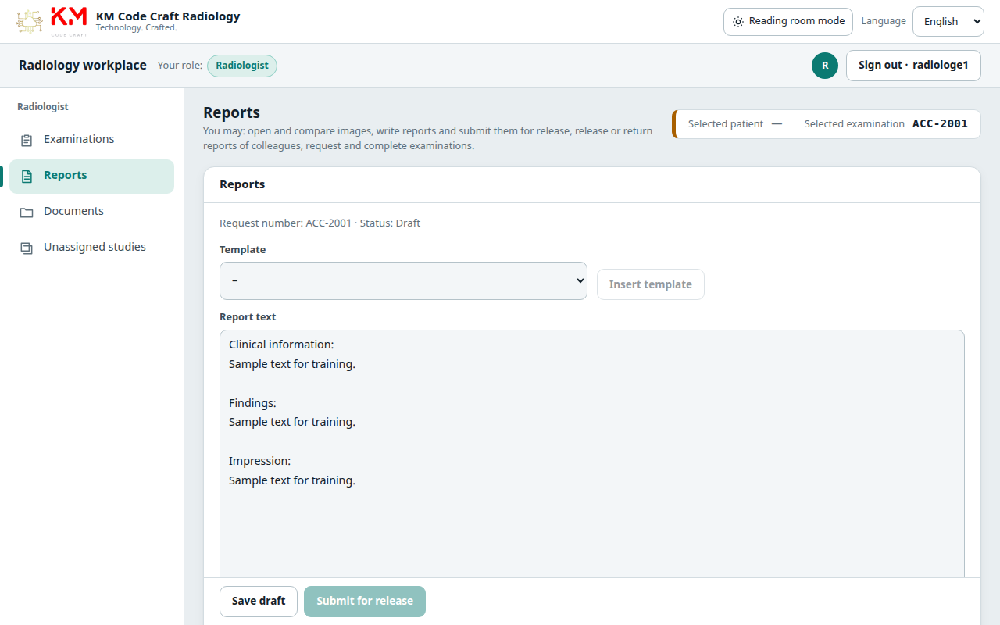
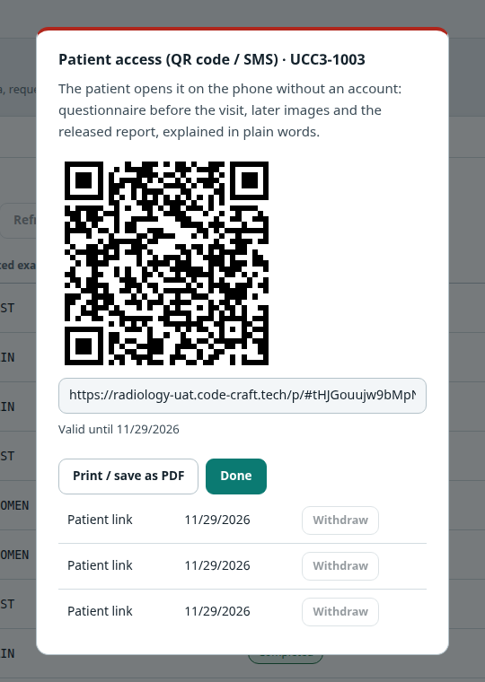
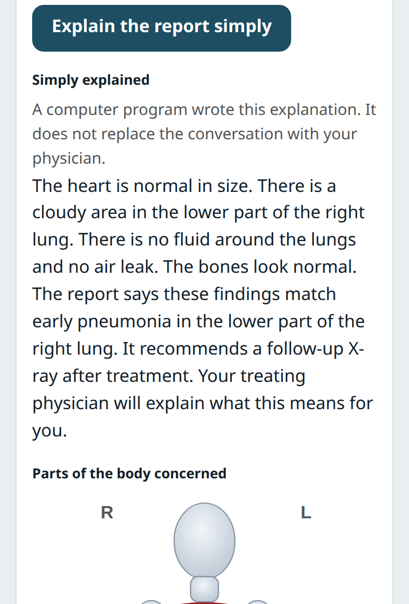
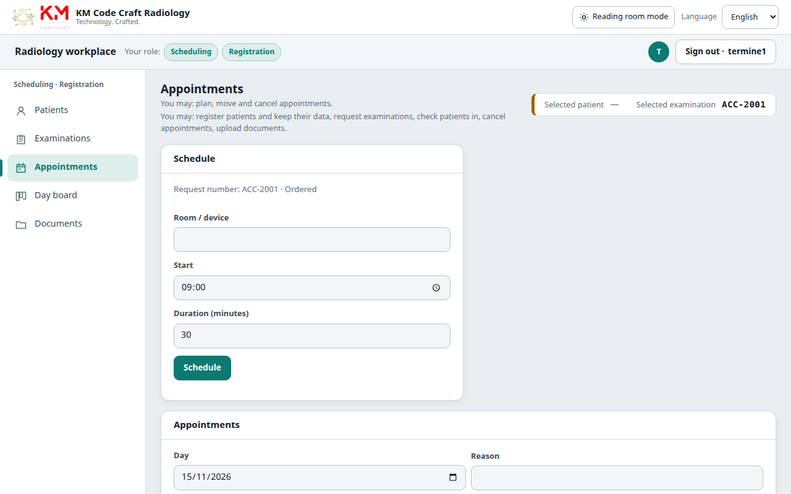
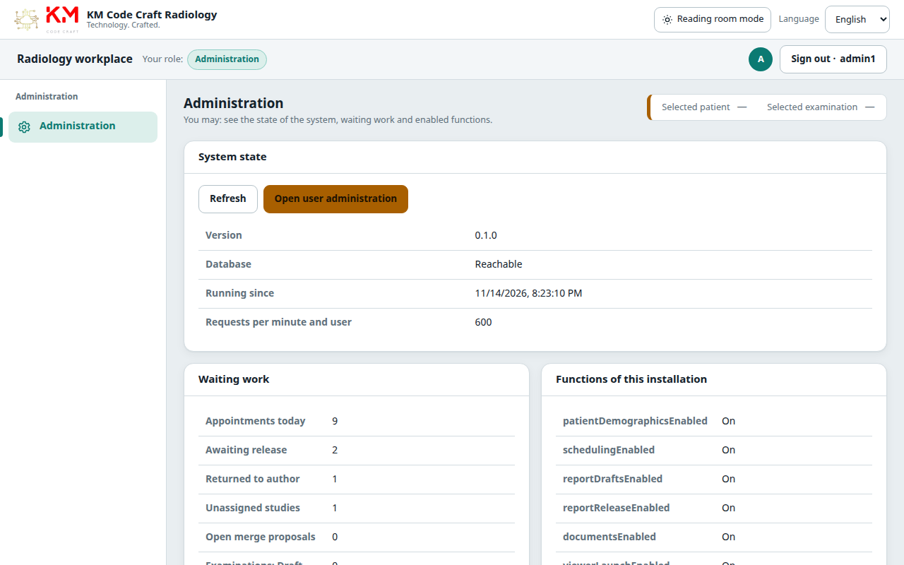
03
Eleven roles separate who may see and do what. The server enforces the separation, not just the screen.
04
Patient data does not leave your building. Who did what can be proven.
05
Proven open building blocks, cleanly connected. No third-party licence fees for the core components.
| Area | Implementation |
|---|---|
| Workplace | Web application for current versions of Chrome and Edge; nothing to install on the workstation |
| Server | Linux with Docker; all services as hardened containers without root privileges |
| Database | PostgreSQL 17 with row-level access separation and continuous backup |
| Image archive | Orthanc (DICOM C-STORE, DICOMweb, modality worklist) |
| Viewer | Own web viewer (WebAssembly, WebGPU) through short-lived access links; also inside the Windows program |
| AI (add-on) | Models on your premises, without internet: organ finding (TotalSegmentator, Apache-2.0), image and text model (MedGemma), dictation (whisper), text assistant. On a separate AI server or on the same server as the system |
| Sign-in | Keycloak (OpenID Connect, TOTP), optional LDAP / Active Directory |
| Interfaces | DICOM, DICOMweb, REST API with OpenAPI 3.1 description, Prometheus metrics |
| Not included | HL7/FHIR interfaces, billing, teleradiology, personal qualified signature |
| Server guideline | For a small department: 8 cores, 32 GB RAM, SSD for the database, mirrored image storage sized by study volume, UPS, separate backup medium. With the language model on the same server: 16 cores and 64 GB RAM. Exact sizing follows from the site survey. |
06
All checks run automatically and are recorded in the project log. The figures come from the development machine and are no promise for your hardware.
| Check | Result |
|---|---|
| Acceptance on the test site | A whole working day with test accounts over the internet: registration to release, critical alarm with acknowledgement, questionnaire on the phone with a warning to the team, report explanation, organ finding in the viewer (17 Nov 2026) |
| Automated tests | More than 400 automated tests and 60 tests against a real database on every change |
| Whole workflow in the browser | Sign-in → appointment → examination → report → release by the second reader, with second factor, against a real server |
| Modality connection | Receive and worklist against a real DICOM archive with a simulated device, including Arabic names |
| 30-minute endurance load | 276,205 requests without an error, response time steady at 11 ms (95th percentile), memory stable |
| Recovery | 11 GB database restored to a chosen point in time in 75 seconds after a simulated total loss |
| Report PDF | PDF/A-2b with embedded fonts, Arabic and German |
07
We deliver the system as a finished installation: hardware, installation, training and support.
08
09
To read, pass on and check.
Nine illustrated guides, step by step
10
No. The models run on your premises – on a separate AI server or together with the system on one server. Where possible, organ finding even runs on the graphics card of the physician's computer.
No. It makes suggestions that are marked as such; the physician checks, confirms or rejects them. Only what a person releases is released.
No. The system runs entirely in your own network. Internet is only needed for remote support, if you want it.
That follows the qualification and approval in the country concerned. Where an approved diagnostic workstation is required, the archive provides it with the images through DICOM.
Devices that send DICOM. For the worklist at the device, the device must support modality worklist and be licensed for it. We clarify that in the site survey.
No. Whether and which approval is required depends on your country and the intended use. We clarify this together before an installation.
The price depends on hardware, number of devices and level of support. You receive a fixed quotation after the site survey.
You do. It lives on your server in open formats (DICOM, PostgreSQL, PDF/A).
We show you the system with sample data and discuss what your department needs.
Radiologie-Informationssystem · Bildarchiv · Befundung
Von der Anmeldung über den Termin und das Gerät bis zum freigegebenen Befund: ein Arbeitsplatz im Browser, auf Arabisch, Englisch und Deutsch. Server und Daten stehen bei Ihnen, nicht in einer Cloud. Auf Wunsch mit KI-Unterstützung, die ebenfalls im Haus läuft.
Die Zulassung richtet sich nach dem Land und der dort zuständigen Behörde. Vor dem klinischen Einsatz erhält das System die Zulassung, die das jeweilige Land und seine Vorschriften verlangen.
01
Jeder Baustein ist einzeln schaltbar. Sie beginnen mit dem, was Sie brauchen.
Stammdaten mit lückenloser Korrekturhistorie, Suche nach Name und Nummer. Doppelte Akten werden im Vier-Augen-Verfahren zusammengeführt und lassen sich wieder trennen.
Untersuchungen anlegen und verfolgen: angefordert, geplant, angekommen, in Arbeit, abgeschlossen. Jede Rolle sieht nur die Schritte, die sie ausführen darf.
Räume und Geräte mit Schutz vor Doppelbelegung, Anmeldung am Tag der Untersuchung, Absage und Nichterscheinen.
Geplante Untersuchungen erscheinen per DICOM Modality Worklist am Gerät. Das Personal wählt den Patienten aus, statt zu tippen; Verwechslungen durch Tippfehler entfallen.
Empfang per DICOM, automatische Zuordnung eindeutiger Studien zum Auftrag. Alles Zweifelhafte landet in einer Prüfliste und wird von einem Menschen zugeordnet oder abgelehnt.
Eigener Web-Viewer direkt aus der Untersuchung: drei Ebenen (MPR) und 3D, Fenster per Taste (F2 Lunge, F3 Knochen, F4 Weichteile, F8 Gehirn, F9 Bauch), Messen von Abstand, Winkel, Cobb-Winkel, Fläche und Dichtewert, Vergleich mit der Voruntersuchung. Die Anordnung merkt sich jeder Arzt je Untersuchungsart (Hanging Protocol). Der diagnostische Einsatz richtet sich nach der Qualifizierung im jeweiligen Land.
Entwurf mit Vorlagen, Einreichen, Freigabe durch einen Zweitleser (abschaltbar), Zurückgeben mit Begründung, Nachträge. Ein freigegebener Befund ist unveränderlich.
Jeder freigegebene Befund erhält ein kryptografisches Systemsiegel und lässt sich als PDF/A-2b für die Langzeitablage ausgeben.
Eigenes Programm für den Arztplatz: Arbeitsliste und Bilder nebeneinander oder die Bilder auf dem zweiten Bildschirm, Vergleich mit der Voruntersuchung in einem Aufruf, Testbild für den Bildschirm.
Überweisungen, Einwilligungen und Vorbefunde als PDF oder Bild hochladen. Jede Datei wird vor dem Speichern auf Schadsoftware geprüft.
Übersicht über Systemzustand, wartende Arbeit und eingeschaltete Funktionen. Benutzer, Rollen und zweiter Faktor in einer eigenen Verwaltungsoberfläche.
Ein Modell findet Organe, Knochen und Wirbel einer CT, beschriftet die Wirbel (C/T/L/S) in allen Ebenen und springt per Klick zum Organ. Gerechnet wird auf der Grafikkarte des Arzt-Rechners, wenn sie stark genug ist – das entlastet den Server –, sonst auf dem Server. Bei mehreren Grafikkarten wählt der Viewer die stärkste; der Arzt kann umstellen.
Neue Untersuchungen sieht sich ein Bild- und Sprachmodell schon beim Eingang an. Beim Öffnen steht der Vorschlag neben den Bildern; der Arzt bestätigt oder verwirft ihn. Ein Vorschlag, kein Befund.
Diktat per Sprache; ein Klick gliedert den Text in Fragestellung, Technik, Befund und Beurteilung, ohne etwas hinzuzufügen. Dazu Übersetzung zwischen Arabisch, Englisch und Deutsch und Rechtschreibprüfung. Übernommen wird nichts ohne einen Menschen.
Der Radiologe meldet einen kritischen Befund; die zuweisenden Ärzte sehen sofort einen roten Alarm, bis jemand ihn quittiert. Auf Wunsch zusätzlich E-Mail, SMS oder WhatsApp, ohne Patientennamen.
Bilder, auf die der Befundtext verweist, erscheinen im Befund-PDF direkt unter dem Text.
Link oder QR-Code ohne Konto: Fragebogen vor der Untersuchung (Schrittmacher, Metall, Allergie, Schwangerschaft, Niere, Metformin, Platzangst) mit Warnung an das Team, Bilder in einer Patientenansicht, der freigegebene Befund in einfachen Worten erklärt (Arabisch, Englisch, Deutsch) und ein Gast-Link für eine Zweitmeinung, höchstens 7 Tage gültig.
Für Empfang und MTR: erwartet, im Wartezimmer mit Wartezeit, im Gerät mit Laufzeit und Restzeit, fertig. Dazu jedes Gerät mit frei oder belegt und dem nächsten Termin.
Vergleich mit der Voruntersuchung als Differenzkarte (zugenommen rot, abgenommen grün) oder Überblendung; die Vorserie wird dafür von selbst räumlich angepasst – Höhe, Lage und elastisch in drei Richtungen. Bei bestätigten Herden rechnet der Viewer die Summe der längsten Durchmesser und die Veränderung nach RECIST 1.1. Berechnete Hilfen; die Beurteilung bleibt beim Arzt.
Befund-Notizen direkt neben den Bildern, mit Diktat und Messungen als Verweis; Sprachbefehle auf Arabisch, Englisch und Deutsch. Messungen lassen sich als DICOM-Darstellungszustand (GSPS) im Archiv ablegen, damit andere Betrachter sie zeigen, und gegen die Normwert-Liste der Einrichtung halten. Ein Erklär-Clip mit Stimme entsteht als MP4.
Eine zweite Serie liegt deckungsgleich über der ersten, etwa PET über CT. Helligkeit und Kontrast rechnet der Grafikchip des Arbeitsplatzes; das Archiv liest auch HTJ2K-komprimierte Bilder.
Die Einrichtung pflegt ihre Vorlagen in einer Datei. Vorlagen im MRRT-Format, wie RadReport sie anbietet, lassen sich mit einem Befehl übernehmen; Quelle und Lizenzhinweis bleiben am Text.
Der Server wird als RPM-Paket eingerichtet. Für Standorte ohne Internet nimmt ein Befehl alles Nötige auf einen Datenträger; die Installation läuft dann ganz ohne Netzzugang.
System und KI-Modelle laufen auf Wunsch zusammen auf einem einzigen Server, ohne zweiten KI-Rechner. Die Modelle werden vorab geladen oder per USB-Stick eingespielt – ohne Internet.
Übersetzt Texte zwischen Arabisch, Englisch und Deutsch, prüft die Rechtschreibung und schlägt eine Reihenfolge der wartenden Arbeit vor – angebunden an einen KI-Server im eigenen Haus, etwa KM Code Craft AI. Er macht nur Vorschläge.
02
Bildschirmfotos der echten Oberfläche. Personen und Angaben sind erfunden; die Aufnahmen im Viewer stammen aus öffentlichen, anonymisierten Forschungssammlungen (The Cancer Imaging Archive: RIDER Lung CT, Lung-PET-CT-Dx, Pancreas-CT; CC BY).
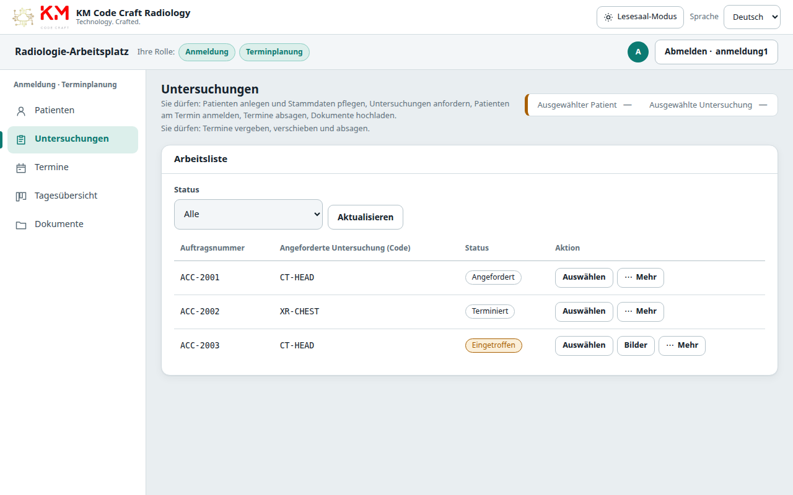
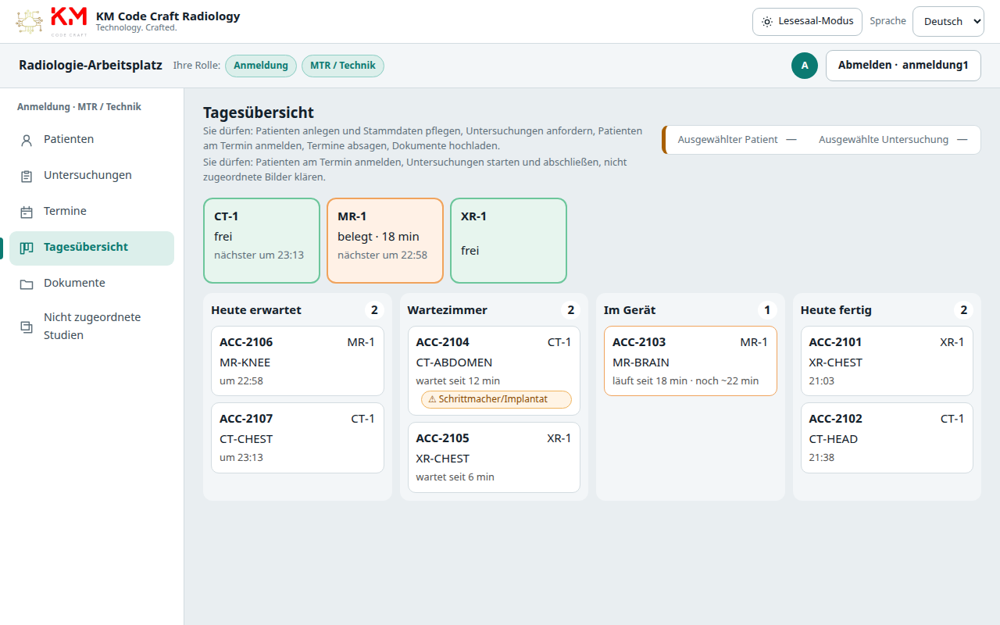
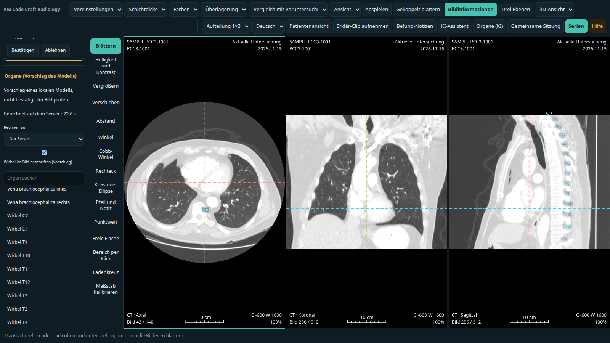
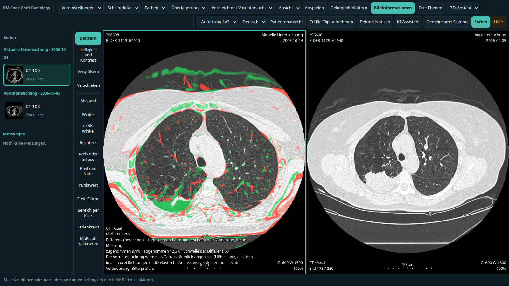
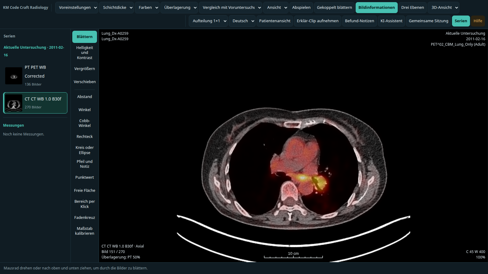
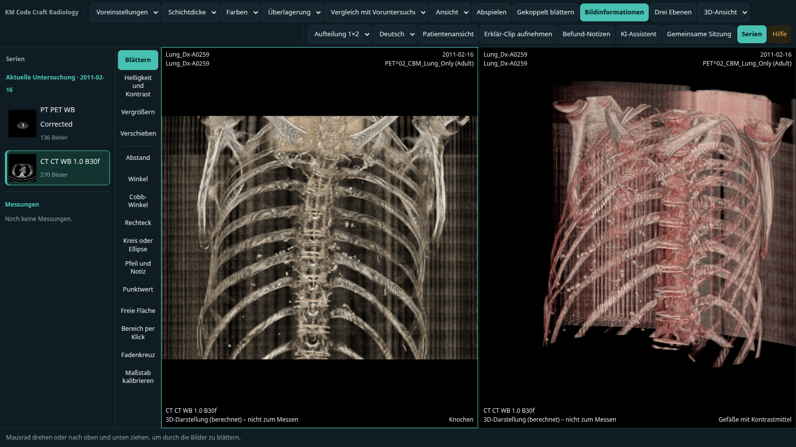
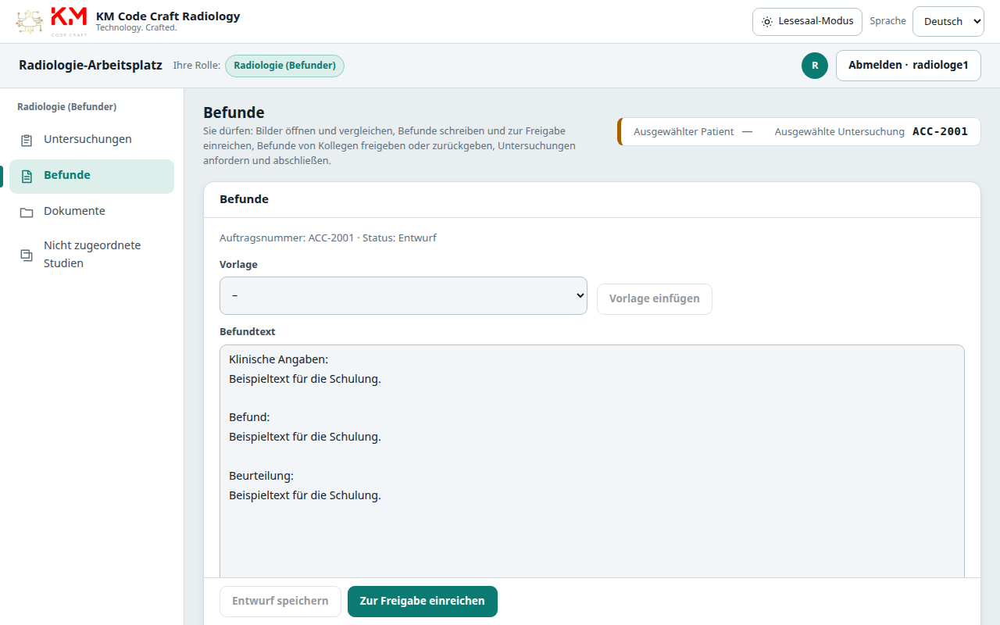
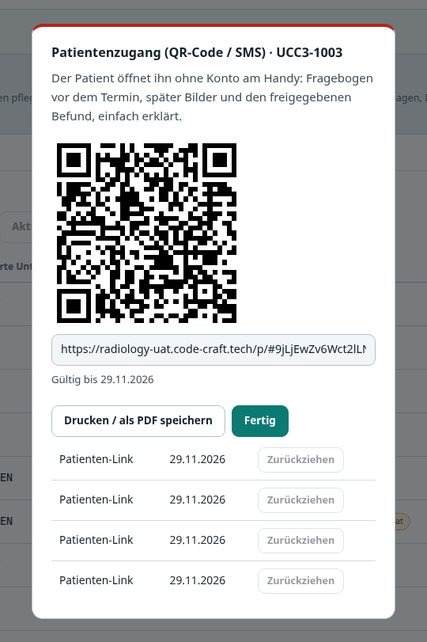
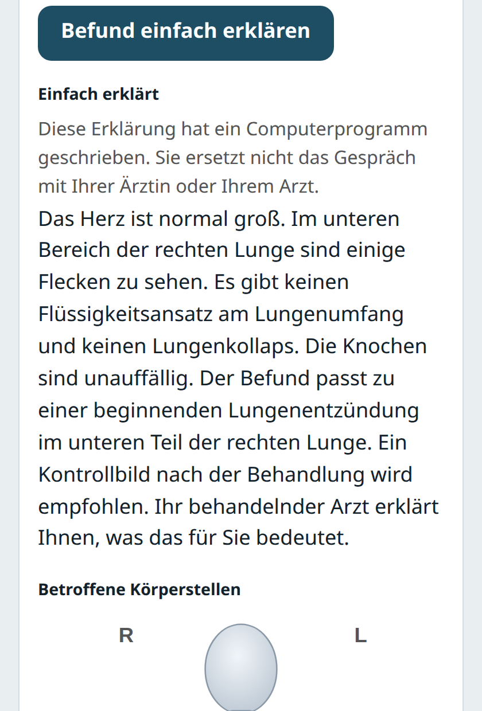
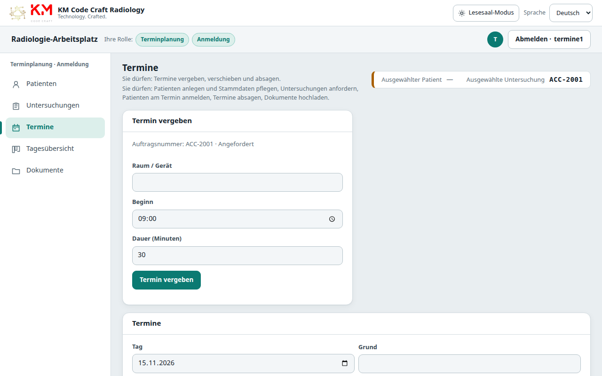
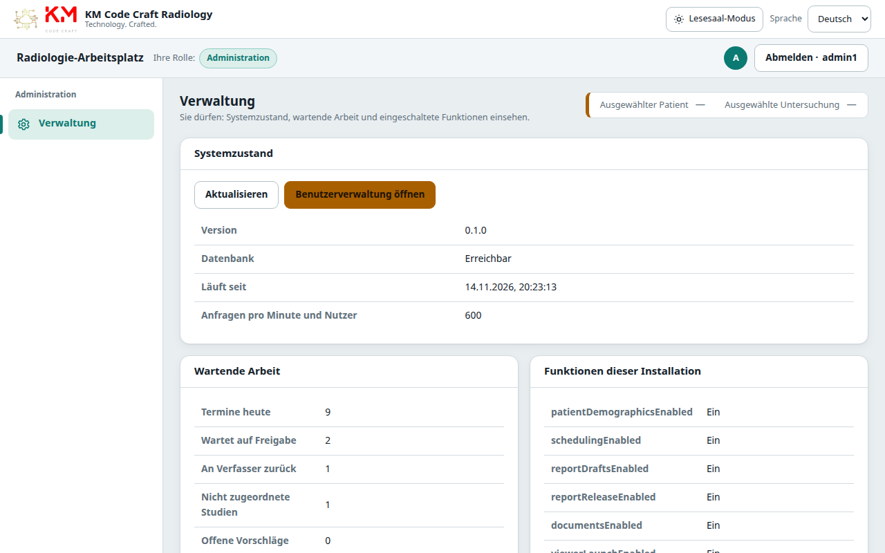
03
Elf Rollen trennen, wer was sehen und tun darf. Der Server setzt die Trennung durch, nicht nur der Bildschirm.
04
Patientendaten verlassen Ihr Haus nicht. Wer was getan hat, lässt sich belegen.
05
Bewährte offene Bausteine, sauber verbunden. Keine Lizenzgebühren an Dritte für die Kernkomponenten.
| Bereich | Ausführung |
|---|---|
| Arbeitsplatz | Web-Anwendung für aktuelle Versionen von Chrome und Edge; keine Installation am Arbeitsplatz |
| Server | Linux mit Docker; alle Dienste als gehärtete Container ohne Root-Rechte |
| Datenbank | PostgreSQL 17 mit zeilenweiser Zugriffstrennung und fortlaufender Sicherung |
| Bildarchiv | Orthanc (DICOM C-STORE, DICOMweb, Modality Worklist) |
| Viewer | Eigener Web-Viewer (WebAssembly, WebGPU) über kurzlebige Zugangslinks; auch im Windows-Programm |
| KI (Zusatzmodul) | Modelle im eigenen Haus, ohne Internet: Organsuche (TotalSegmentator, Apache-2.0), Bild- und Textmodell (MedGemma), Diktat (whisper), Textassistent. Auf einem eigenen KI-Server oder auf demselben Server wie das System |
| Anmeldung | Keycloak (OpenID Connect, TOTP), optional LDAP / Active Directory |
| Schnittstellen | DICOM, DICOMweb, REST-API mit OpenAPI-3.1-Beschreibung, Prometheus-Metriken |
| Nicht enthalten | HL7/FHIR-Schnittstellen, Abrechnung, Teleradiologie, persönliche qualifizierte Signatur |
| Richtwert Server | Für eine kleine Abteilung: 8 Kerne, 32 GB RAM, SSD für die Datenbank, gespiegelter Bildspeicher nach Studienaufkommen, USV, getrenntes Sicherungsmedium. Mit Sprachmodell auf demselben Server: 16 Kerne und 64 GB RAM. Die genaue Auslegung folgt aus der Standortaufnahme. |
06
Alle Prüfungen laufen automatisch und sind im Projektprotokoll nachzulesen. Die Messwerte stammen vom Entwicklungsrechner und sind keine Zusage für Ihre Hardware.
| Prüfung | Ergebnis |
|---|---|
| Abnahme auf der Teststelle | Ganzer Tagesablauf mit Testkonten über das Internet: Anmeldung bis Freigabe, kritischer Alarm mit Quittung, Fragebogen am Handy mit Warnung ans Team, Befund-Erklärung, Organsuche im Viewer (17.11.2026) |
| Automatische Tests | Über 400 automatische Tests und 60 Tests gegen eine echte Datenbank bei jeder Änderung |
| Gesamtablauf im Browser | Anmeldung → Termin → Untersuchung → Befund → Freigabe durch den Zweitleser, mit zweitem Faktor, gegen echten Server |
| Geräteanbindung | Empfang und Arbeitsliste gegen ein echtes DICOM-Archiv mit simuliertem Gerät, auch mit arabischen Namen |
| Dauerlast 30 Minuten | 276.205 Anfragen ohne Fehler, Antwortzeit gleichbleibend 11 ms (95 %), Speicher stabil |
| Wiederherstellung | 11 GB Datenbank nach simuliertem Totalverlust in 75 Sekunden auf einen gewählten Zeitpunkt zurückgeholt |
| Befund-PDF | PDF/A-2b mit eingebetteten Schriften, Arabisch und Deutsch |
07
Wir liefern das System als fertige Anlage: Hardware, Installation, Schulung und Betreuung.
08
09
Zum Lesen, Weitergeben und Prüfen.
Neun bebilderte Hefte, Schritt für Schritt
10
Nein. Die Modelle laufen im eigenen Haus – auf einem eigenen KI-Server oder zusammen mit dem System auf einem Server. Die Organsuche rechnet, wo möglich, sogar auf der Grafikkarte des Arzt-Rechners.
Nein. Sie macht Vorschläge, die als solche gekennzeichnet sind; der Arzt prüft, bestätigt oder verwirft sie. Freigegeben wird nur, was ein Mensch freigibt.
Nein. Das System läuft vollständig im eigenen Netz. Internet ist nur für die Fernbetreuung nötig, wenn Sie sie wünschen.
Das richtet sich nach der Qualifizierung und Zulassung im jeweiligen Land. Wo eine zugelassene Befundstation vorgeschrieben ist, stellt das Archiv ihr die Bilder per DICOM bereit.
Geräte, die DICOM senden. Für die Arbeitsliste am Gerät muss das Gerät Modality Worklist unterstützen und dafür lizenziert sein. Das klären wir in der Standortaufnahme.
Nein. Ob und welche Zulassung nötig ist, hängt von Ihrem Land und vom Einsatzzweck ab. Wir klären das gemeinsam vor einer Installation.
Der Preis hängt von Hardware, Zahl der Geräte und Betreuungsumfang ab. Sie erhalten nach der Standortaufnahme ein festes Angebot.
Ihnen. Sie liegen auf Ihrem Server in offenen Formaten (DICOM, PostgreSQL, PDF/A).
Wir zeigen Ihnen das System mit Beispieldaten und besprechen, was Ihre Abteilung braucht.